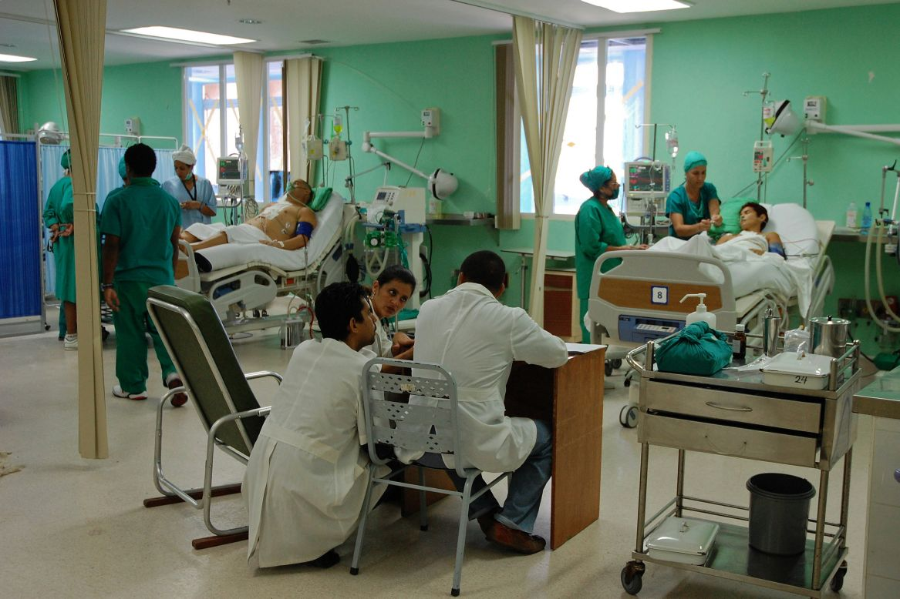
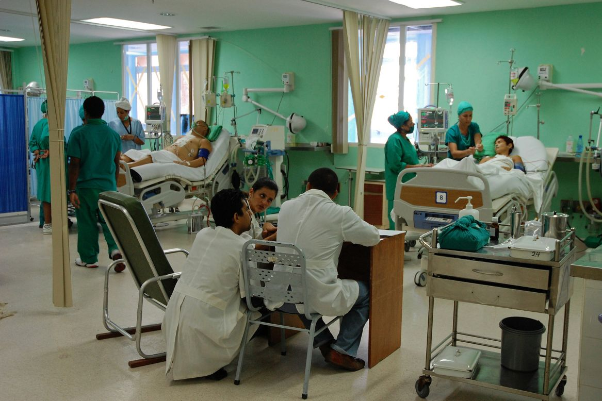

Medical Equipments
CT Scanner
Electrosurgical Units
Exam Table
MRI Machines
Patient Monitor
Surgical Light
Surgical Table
Ultrasound
Anesthesia Machines
Our full-service repair depot provides certified, component-level repair in the streamlined, user-friendly process. Let us handle repairs to your patient monitors, modules, fetal transducers, telemetry equipment, endoscopes, cables, and transducers so you can focus on your patients.
Ivan Meds Patient Monitoring offers patient monitoring repairs at component level. Place an order below to get started and let us walk you through the online repair process in just a few short steps.
When ultrasound equipment problems arise at your facility, you need trained technicians on your side and ready to help. Avante's comprehensive service contracts provide ultrasound facilities with dedicated service professionals whose sole responsibility is to manage your ultrasound service and repair needs, allowing you to focus on what you do best – providing quality care to your patients.
At IvanCMedsDirect, we make it simple to schedule your regular preventive maintenance. Ship your equipment to us at your convenience, and our dedicated portable ultrasound team will provide a complete inspection of the machine, probes, peripheral devices and network capabilities.
IvanCMedsDirect can diagnose your current probe, make needed repairs and deliver your probe to you in as few as 3 days for a fraction of the cost of acquiring a new probe. We repair both TEE and standard probes manufactured by major OEMs (HP, GE, Philips, Siemens, Acuson, ATL, Toshiba, and Sonosite). We DO NOT repair cloned probes.
IvanCMedsDirect Diagnostic Imaging has an outstanding service team with industry leading engineers across the United States who quickly respond to customer needs. They are equipped with the knowledge and tools to handle the most difficult technical problems. We offer full support on any system, even on imaging equipment not sold by Avante.
We offer nationwide full service and repair for Catheterization (Cath) Lab, Interventional Radiology (IR/Angio) Lab, Electrophysiology (EP) services. Our expert field engineering team is strategically positioned to be able to keep you running on short notice. We service all major brands of equipment and have a large inventory of parts and components to ensure rapid repairs. We've also invested in the latest service technologies, remote diagnostic tools, and state of the art testing and repair bays in our North Carolina national service center.
IvanCMedsDirect Diagnostic Imaging offers a one source solution for all popular CT systems. We provide a variety of tailored services, certified refurbished systems, and in-stock parts for a wide range of products. We are a trusted partner for hospital systems, clinical engineers, imaging centers, and mobile providers.
IvanCMedsDirect offers a one source solution for all popular MRI systems. We provide a variety of tailored services, certified refurbished systems, and in-stock parts for a wide range of products. We are a trusted partner for hospital systems, clinical engineers, imaging centers, and mobile providers.
IvanCMedsDirect allows you to take advantage of our extensive inventory of quality MRI coils from all market leading manufacturers without the hassle of returning loaners or approving repair quotes.
 


Ivan Conrad
CEO
ivanconradmedicals001@gmail.com
Ivan Conrad is an emergency medicine physician born in February 27 1985 . After so many experiences working primarily in the emergency department he founded Ivan Meds equipment services in 2018. The goal of this company is devoted to supplying reliable medical equipments and services to urban and rural areas all over the world also fixing and maintenance of medical facilities. In the year 2020, A foundation called the Ivan Care Foundation was founded, which is aimed at giving access to affordable healthcare with the public support and all our health care practicioners

Ming Yue
Human Resources Manager
mingyue@comcast.net

Robert Hills
Technician
robert090@comcast.net

Joseph Watson
Technician
josephwatson16@outlook.com

William Burrell
Head Of Transport
bbwilliam@comcast.net